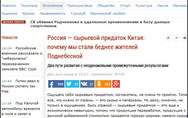

“散煤清零，聚力共建”，能源基金会携手凤凰为散煤治理献策助力
-
为凝聚各方力量治理散煤污染，11月27日，凤凰网国际智库与长期关注能源环
境问题的能源基金会共同在京举办“散煤清零，聚力共建”论坛。作者：凤凰国际智库 时间：2017-11-28
《一路书香》第二站陕西, 窦文涛张星月蒋方舟继续“文化探寻之旅”-
继和“不老男神”任贤齐一起探寻了闽南古风乡情后，店长窦文涛、店员张星
月又携新伙伴——中国青年女作家蒋方舟，一行来到了陕西榆林市清涧县师家
沟村，一起深入感受黄土风貌，体验百年窑洞里陕北人家的地域风情......作者：《一路书香》节目 时间：2017-11-29
义乌进化史：小县城何以“逆袭”为互联网弄潮儿？-

如今，义乌跨境电子商务环境发展优越，已成为中国跨境电子商务发展的重要
平台和聚集地。作者：凤凰国际智库 时间：2017-11-29
一路书香：窦文涛、任贤齐、张星月泉州探乡愁-
一路书香·泉州义乌跨境电子商务环境发展优越，已成为中国跨境电子商务发展的
重要平台和聚集地作者：一路书香 时间：2017-11-29
生鲜电商中的一股“清流”——璞谷塘的武林秘籍-
相信用不了多久，崭新上线的璞谷塘就能让广大消费者感受到良心与匠心。所
以璞谷塘的武林秘籍究竟是什么？相信看完本文你心中自有答案。作者：国际智库 时间：2017-11-29
蒋方舟陕西坐驴车, 车夫竟是窦文涛-
《一路书香》第三站在黄土高原与内蒙古高原交界的陕北重镇榆林拍摄，这一
战又有哪些看点呢？作者：《一路书香》节目 时间：2017-11-29
《一路书香》宣传片曝光, 窦文涛讲述那些与书不得不说的故事-
《一路书香》的宣传片正式上线，在宣传片中，窦文涛还讲述了那些自己与书
不得不说的故事。作者：《一路书香》节目 时间：2017-11-29
涛店长和星月妹穿上大袄子拿着锄头, 如此“接地气”的样子你又见过-
《一路书香》第二站录制完毕，背后的精彩花絮先睹为快！。
作者：《一路书香》节目 时间：2017-11-29
也许, 每个人的爱情里都有一首“任式情歌”-
由凤凰网、深圳卫视和万燕传媒联合出品的全新节目《一路书香》，将在11
月30日正式开播。任贤齐会给我们带来怎样的惊喜？作者：《一路书香》节目 时间：2017-11-29
多名女性想参选，明年俄大选普京将PK“娘子军”？-
如果普京宣布参选，那么“娘子军”加入竞逐将给他带来正负的双重效果。
作者：张全 时间：2017-11-29
俄专家：为何我们变得比中国人穷？ 因发展道路不同-

作为发展中国家，中国曾非常贫困。几十年前，他们曾非常依赖俄罗斯的技
术，我们则从中国那里购买消费品。然而，如今的情况完全不同。作者：观察者 时间：2017-11-29
在大多数国家退出殖民统治的时代，为何美国还在坚守-
对于美国应该承认这些移民地区问题的恰当时机已经逾期几十年了，承认军事
部署使他们越加贫困，并且给予他们应得的民主权利。作者： 陈葆心 时间：2017-11-29
从3.62万条推文里，看“网红”特朗普的对华战略转型-
本月访问中国时，特朗普将自己的推特封面换成了中美两国元首夫妇同京剧演员
们的合影作者： Ivy Yu 时间：2017-11-29
郑永年：穆加贝们的宿命-
如果缺乏法制、体制建设，不管穆加贝的立场如何，都很难带领津巴布韦这个
曾经的“面包之乡”重新走上经济发展的正轨。作者：郑永年 时间：2017-11-29
朝鲜：有钱也买不到的平壤户口-
朝鲜最好的大学都集中在平壤，能进入这些大学读书的绝大多数都是出生、居
住在平壤的孩子，而其他地方的学生一般只能上地方的大学。作者： 峰岭ForeignLink 时间：2017-11-29
“散煤清零，聚力共建”，能源基金会携手凤凰为散煤治理献策助力-
为凝聚各方力量治理散煤污染，11月27日，凤凰网国际智库与长期关注能源环
境问题的能源基金会共同在京举办“散煤清零，聚力共建”论坛。作者：凤凰国际智库 时间：2017-11-28